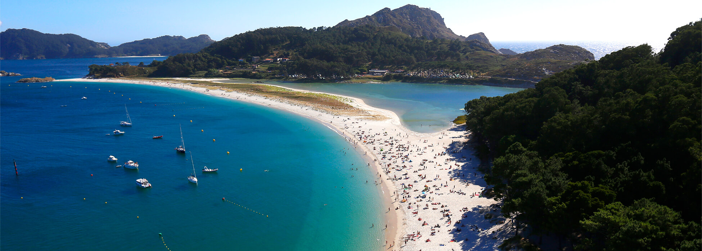

Las Islas Cíes son el mayor
tesoro de la ría de Vigo: Un increíble Parque Nacional
Marítimo-Terrestre y uno de los lugares más hermosos del país, de ahí
que los romanos les pusieran el nombre de
las islas de los dioses.
El archipiélago de Cíes está compuesto por tres islas:
Las 2 primeras unidas por un largo arenal:
la playa de Rodas, la mejor playa del mundo, según The
Guardian.
Cíes forma parte del
Parque Nacional Illas
Atlánticas: un paraíso de playas paradisíacas y aguas cristalinas, con un entorno
natural único.
Una visita a Cíes es ideal tanto para practicar
senderismo en familia como para disfrutar de sus
playas vírgenes y tranquilas.
Para llegar a las Islas Cíes se puede utilizar:
También podrás pasar un fin de semana en Cíes de acampada. Además, es un lugar excepcional para bucear en la ría de Vigo y, con suerte, podrás nadar rodeado de arroaces (los delfines autóctonos, de menor tamaño).
Autor: Aitor Martinez Parente